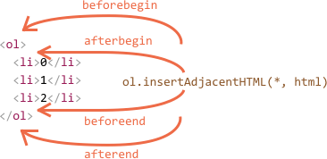

1. Робота з DOM-вузлами
Використовуючи DOM API ми можемо не тільки вибирати вже існуючі, а й видаляти, а так само створювати нові елементи, після чого додавати їх в документ.
1.1. Створення
document.createElement(tagName)
Створює HTML-елемент за зазначеним іменем тега і повертає посилання на нього як
результат свого виконання. TagName це рядок, який вказує тип створюваного
елемента. Елемент створюється в пам'яті, в DOM його ще немає.
const heading = document.createElement('h1');
console.log(heading); //
heading.textContent = 'This is a heading';
console.log(heading); // This is a heading
const image = document.createElement('img');
image.setAttribute('src', 'https://picsum.photos/640/480');
image.setAttribute('alt', 'nature');
console.log(image); // <img src="https://picsum.photos/640/480" alt="nature">
1.2. Додавання
Щоб створений елемент був відображений на сторінці, його необхідно додати до вже
існуючого елементу в DOM. Припустимо, що додаємо в якийсь елемент ParentElem,
для цього є методи.
parentElem.appendChild(elem)
Додає elem в кінець дочірніх елементів parentElem.
parentElem.insertBefore(elem, nextSibling)
Додає elem в колекцію дітей parentElem, перед елементом nextSibling. Якщо
другим аргументом вказати null, тоді insertBefore спрацює як appendChild.
Посилання на приклад в Codepen.io
Якщо елемент для вставки це існуючий вузол, то він вилучається зі свого старого місця і ставиться на нове. Звідси випливає правило - один і той же вузол не може бути одночасно в двох місцях.
1.2.1. Методи append/prepend, before/after, replaceWith
Є методи які дозволяють вставити що завгодно і куди завгодно. У всіх цих
методах, nodes - DOM-вузли або рядки, в будь-якому поєднанні і кількості.
Причому рядки вставляються як текстові вузли.
elem.append(nodes)- додаєnodesв кінецьelemelem.prepend(nodes)- додаєnodesна початокelemelem.after(nodes)- додаєnodesпісля вузлаelemelem.before(nodes)- додаєnodesперед вузломelemelem.replaceWith(nodes)- додаєnodesзамістьelem
Посилання на приклад в Codepen.io
1.3. Видалення
Для того щоб видалити вузол існують два методи. Перший, більш старий метод
працює у всіх браузерах, дозволяє видалити дитину elem з батьків Parent. В
такому випадку необхідно мати посилання як на батька так і на дитину.
parent.removeChild(elem)
Більш сучасний метод, але з гарантованою підтримкою тільки в нових браузерах,
він викликається на самому елементі elem який необхідно видалити.
elem.remove()
Посилання на приклад в Codepen.io
1.4. Клонування
Уявімо що у нас є елемент з текстом, і ми хочемо вставити такий же елемент в
іншу частину документа. Ми вже знаємо що кожен елемент може існувати в
document в одному екземплярі. Але елемент можна клонувати і працювати з цим
клоном (точною копією).
Так само ми могли б створити новий елемент і працювати з ним, але в ряді випадків набагато ефективніше клонувати існуючий, а потім змінити текст всередині. Зокрема, якщо елемент великий, то клонувати його буде швидше, ніж перестворити.
elem.cloneNode(true)
Створить глибоку копію елемента - разом з атрибутами, включаючи всі піддерево.
Якщо ж викликати з аргументом false, то копія буде зроблена без дочірніх
елементів.
Посилання на приклад в Codepen.io
2. Властивість innerHTML
Ще один спосіб створити DOM-елементи і помістити їх в дерево це використовувати рядки і дозволити браузеру зробити всю важку роботу. Як ми побачимо далі, у такого підходу є свої плюси і мінуси.
2.1. Створення вузлів
elem.innerHTML — властивість, дозволяє отримати вміст елемента, включаючи
теги, у вигляді рядка. Значення, що повертається innerHTML — завжди валідний
HTML-код.
Воно є як для читання так і для запису. Якщо записати в innerHTML елемента
рядок з HTML-тегами, то браузер її розпарсить і перетворить їх в валідні
DOM-вузли.
elem.innerHTML = 'Pellentesque habitant.
';
Такий код говорить браузеру розпарсити рядок, перевірити на наявність тегів,
якщо знайшов такі то створити DOM-елементи і вставити їх в правильному порядку.
При такому підході, на відміну від createElement, ми не отримуємо посилання на
створений DOM-елемент. Водночас, створювати багато розмітки простіше.
Зміна innerHTML повністю видалить і перестворить всіх
нащадків контейнера. В результаті ми отримуємо додаткові витрати на серіалізацію
вже існуючої розмітки, що не дуже добре.
Посилання на приклад в Codepen.io
3. Метод insertAdjacentHTML()
Метод парсит зазначений рядок як HTML і додає результуючі вузли в вказане місце
DOM-дерева. Чи не робить повторний рендеринг для існуючих елементів всередині
елемента-батька на якому використовується. Це дозволяє уникнути додаткового
етапу серіалізації, роблячи його швидше, ніж безпосередня маніпуляція
innerHTML.
element.insertAdjacentHTML(position, string)
position — позиція щодо елемента. Приймає одне з таких значень:
'beforebegin'- перед element'afterbegin'- всередину element, в самий початок контента'beforeend'- всередину element, в самий кінець контенту'afterend'- після element

beforebegin і afterend працюють тільки в тому
випадку, якщо вузол вже знаходиться в DOM-дереві і має батьківський
елемент.
Посилання на приклад в Codepen.io
У цього методу є брати-близнюки. Їх синтаксис, за винятком останнього параметра,
повністю збігається з insertAdjacentHTML. Разом вони утворюють універсальний
швейцарський ніж для вставки чого завгодно куди завгодно.
elem.insertAdjacentElement(position, elem)— вставляє в довільне місце не HTML-строку, а елементelem.elem.insertAdjacentText(position, text)— створює текстовий вузол з рядкаtextі вставляє його в зазначене місце щодоelem.
4. Оптимізація роботи с DOM
Маніпуляція DOM-дерева це дорога операція. Необхідно всіма можливими методами намагатися мінімізувати кількість звернень до DOM. Розберемося з дуже важливими концепціями при роботі c DOM-деревом.
4.1. Repaint
Відбувається коли зміни відбулися в стилях елемента впливають на зовнішній
вигляд, але не на геометрію. Наприклад, opacity,background-color,
visibility і Outline. Браузер відмальовує його заново, з урахуванням нового
стилю. Це дорога операція, тому що браузер перевіряє видимість всіх інших вузлів
в дереві, один або більше можуть виявитися приховані під змінений зовнішній
вигляд.
4.2. Reflow
Відбувається коли зміни зачіпають вміст, структуру документа, становище
елементів. Йде перерахунок позиціювання і розмірів всіх елементів, що веде до
перемальовування частини або всього документа. Зміни розміру одного
батьківського контейнера вплине на всіх його дітей і предків. Має значно більший
вплив на продуктивність ніж repaint.
4.3. Висновки
Завжди необхідно думати про оптимізацію роботи з DOM. Всі перераховані вище
операції блокують браузер. Сторінка не може виконувати ніякі інші операції в той
час, коли відбувається reflow або repaint. Причинами таких змін зазвичай є:
- Маніпуляції з DOM (додавання, видалення, зміна, перестановка елементів)
- Зміна вмісту, в т.ч. тексту в полях форм
- Розрахунок або зміна CSS-властивостей
- Додавання та видалення таблиць стилів
- Маніпуляції з атрибутом
class - Маніпуляції з вікном браузера (зміни розмірів, прокрутка)
- Активація псевдокласів (наприклад
: hover)
Сучасні браузери оптимізують процес відтворення сторінки без втручання розробника. І все ж не забувайте думати про продуктивність, дотримуйтесь кращим практикам зі статей в додаткових матеріалах цієї секції.